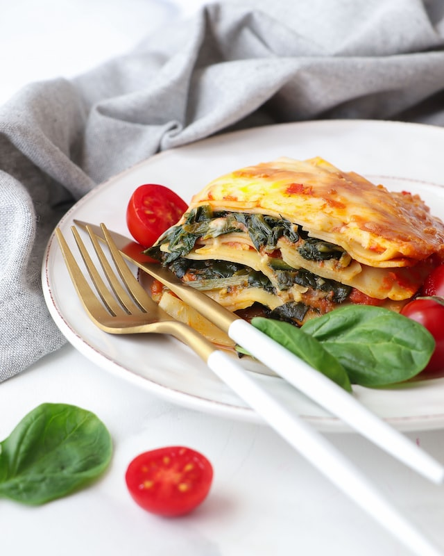

Spinach Lasagna

Vegetarian spinach lasagna
This lasagna is tasty while keeping the calories low.
Ingredients for 2 servings
- 400g spinach
- 1/2 onion
- 200g diced tomatoes
- 1 clove garlic, crushed
- oil
- 150g light cream cheese
- 70g Parmesan cheese
- lasagna noodles as needed
- 1 tablespoon tomato paste
- some fat for the baking dish
- paprica powder
- nutmeg
- 1/4 teaspoon basil
- salt and pepper
Steps
- cube the onion and heat it in some oil
- mix the spinach and the cream cheese in
- let everything heat up
- add the garlic and tomatoes
- stir and season it with some nutmeg, paprica powder, basil, salt and pepper
- cook it for 5 minutes
- grease the baking dish
- layer the lasagna noodles with the mixture
- add some Parmesan cheese as needed
- bake it for 45 minutes at 175 degree celcius
- forget all other steps because I can't cook